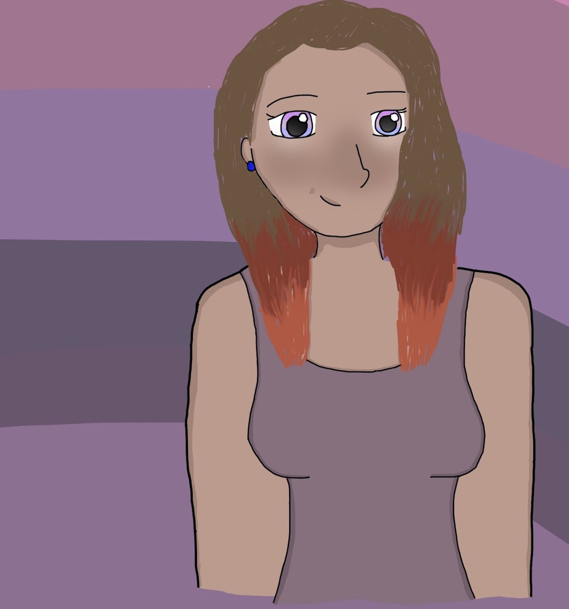

Character Evolution
Elise Alison


Elise Alison is the main love interest in the comic. She is a big part of Jessica's story. 2018 Elise (left), 2020 Elise (right). Elise was created alongside Jessica in 2018. There have been 13 different versions of her between 2018 and 2020. Elise has appeared in a total of 15 Jelise pages and will be in more to come.
- Name: Elise
- Age: 16
- Gender: Female
- Nationality: Australian/Antarctican/South African
- Created: 16/6/2018
- Family: Mr and Mrs Alison (parents) and Lucy Alison (sister)